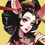
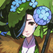
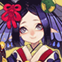
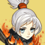
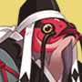
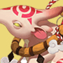
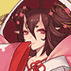
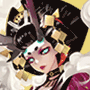

The table below shows the location of the Bounty Shikigamis in Onmyoji. Bounties refresh twice a day and are a good way to get Jades, Shards, and Coins. Using the table below, players can find the bounties quicker. It's a fork of this table, but providing information for both EN and JP onmyoji instead of EN and CN, updated bounty hint information, consistency reviewed, typos fixed, and made way lighter.
Note that Challenge Stages will offer at least 14 units of a Shikigami. However, because of the scarcity of Challenge Tickets, it is not recommend to use them unless the Bounty is hard to find.
ヒント column entries with half like this
are ones I did not yet confirm if that half is the equivalent in the other language
is used as placeholder for missing japanese info.
Last update: Jan 05, 2019
| 式神 | ヒント | Location |
|---|---|---|
|
Lantern Soul / |
Chapter 1 - First Green Imp has 2 in Normal, Second Lantern Boy has 2 in Hard Chapter 2 - Second Grave Digger has 2, First Parasite has 2 Chapter 3 - First Akashita has 2, Second Samurai X has 2 Chapter 5 - Boss Kamikui has 1 Chapter 6 - The two Lantern Soul have 1 each Chapter 7 - Second Kappa has 1 [Recommended] Chapter 9 - First Lantern Boy has 3, Second Lantern Boy has 1, Boss Mouba has 1 Chapter 13 - Boss Kubinashi has 1 Chapter 17 - Boss Lord Arakawa has 1 Riverside Tales - Stage Three has 2 [Recommended] Arakawa's Fury - Stage One to Three have 3 each Ubume's Shield - Stage Five and Seven have 1 each Summer Poem - Stage Five has 2 [Recommended] Shishio's Wake - Stage Two has 3 Aoandon Tales - Stage One has 3 Tender of Sea - Stage One has 3 Blood Moon Rises - Stage Two has 3 (unreleased) Youko's Secret - Stage One has 3 |
|
 Akashita / |
Chapter 3 - First Akashita has 1, Second Akashita has 1 Chapter 10 - Second Satori has 1 Chapter 15 - All enemies have 1 except Boss Chapter 16 - First Akashita has 1, Second Akashita has 2, Third Akashita has 1 [Recommended] Chapter 23 - The two Hone Onna have 3 each Bond of Momiji - Stage Six and Seven have 1 each Riverside Tales - Stage Three has 1 Cry Me a River - Stage Four to Six have 1 each Arakawa's Fury - Stage One to Three have 1 each Tip of the Storm - Stage Five and Six have 1 each [Recommended] Summer Poem - Stage One has 3, Stage Six has 1 [Recommended] Shishio's Wake - Stage Four has 3 Aoandon Tales - Stage One has 1, Stage Three has 3 Tender of Sea - Stage Three has 2 Blood Moon Rises - Stage One has 1, Stage Four has 3 (unreleased) Youko's Secret - Stage Two has 1 |
|
 Red Imp / |
Unconfirmed:
赤鬼 - Red ghost - Slapping butt |
Chapter 4 - First Umbrella has 3, Second Umbrella has 1 in Normal, the two Red Imp have 1 each Chapter 5 - First Nurikabe has 2, Second Nurikabe has 3, the two Hahakigami have 1 each Chapter 6 - The two Chocho have 2 each Chapter 7 - Boss Youko has 2 Chapter 11 - The two Ichimokuren have 2 each [Recommended] Chapter 13 - The three Gaki have 3 each, the three Umbrella have 1 each [Recommended] Chapter 14 - The three Hahakigami have 3 each, Boss Yumekui has 3 Chapter 15 - The three Green Imp have 2 each Soul - Stage One has 2 Encounter - Kuro Mujou, Hone Onna, Shuzu, and Kyonshi Ani have 1 each, Umibozu has 2 Riverside Tales - Stage Six has 1 Summer Poem - Stage Two has 3 [Recommended] Shishio's Wake - Stage Three has 3, Stage Six has 1 Tender of Sea - Stage One has 1, Stage Five has 2 Blood Moon Rises - Stage Three has 1 (unreleased) Youko's Secret - Stage One has 3, Stage Five has 1 |
 Green Imp / |
Chapter 1 - The two Green Imp have 1 each, First Lantern Boy has 2 Chapter 2 - Boss Zashiki has 2 Chapter 5 - Last Kanko has 3 [Recommended] Chapter 6 - The two Blue Imp have 3 each, Boss Kodokushi has 3 Chapter 8 - The two Green Imp have 1 each Chapter 13 - The three Umbrella have 2 each Chapter 15 - The three Green Imp have 1 each Extra Chapter "Hell Agent in training" - Boss Kuro has 3 [Recommended] Encounter - Shuzu has 8, Gaki has 6, Hone Onna has 6, Kyonshi Ani has 4, and Umibozu has 1 Blade's Secret - Stage Six and Seven have 1 each Riverside Tales - Stage Six has 1 Shishio's Wake - Stage Three has 3 Tender of Sea - Stage Five has 1 Blood Moon Rises - Stage Three has 3 (unreleased) Youko's Secret - Stage One has 1 |
|
 Yellow Imp / |
Unconfirmed:
太鼓 - Drum - Single eye |
Chapter 3 - The two Yellow Imp have 1 each, Second Akashita has 1 Chapter 5 - Second Hahakigami has 2, First Kanko has 2 Chapter 8 - The two Green Imp have 2 each Chapter 12 - First Oguna has 1 Soul - Stage One has 1 [Recommended] Encounter - Umibozu has 3, Shuzu has 2, and Kyonshi Ani has 1 Bond of Momiji - Stage Four and Five have 1 each Riverside Tales - Stage Five/Six have 1 each Tip of the Storm - Stage Two has 1 Ubume's Shield - Stage Five has 1 [Recommended] Shishio's Wake - Stage One has 3 Tender of Sea - Stage One has 2, Stage Five has 1 Blood Moon Rises - Stage Three has 3 (unreleased) Youko's Secret - Stage Four has 2, Stage Five has 1 |
 Hahakigami / |
Chapter 2 - The Hahakigami has 1 Chapter 3 - First Yellow Imp has 2 in Normal (1 in Hard) Chapter 4 - The two Hahakigami have 1 each, Boss Ame Onna has 2 Chapter 5 - The two Hahakigami have 1 each [Recommended] Chapter 6 - The two Lantern Soul have 3 each Chapter 7 - First Koi has 1, Second Koi has 3 Chapter 8 - The two Momo have 1 each, First Umbrella has 3, Second Umbrella has 2, Boss Momo has 1 Chapter 9 - First Tesso has 3, Second Rat has 2 Chapter 12 - First Umibozu has 1 Chapter 14 - The three Hahakigami have 1 each [Recommended] Encounter - Futakuchi has 4, Kuro Mujou has 3, Hone Onna has 4, and Kyonshi Ani has 2 [Recommended] Tip of the Storm - Stage One has 4, Stage Two to Ten have 3 each Ubume's Shield - Stage One to Three have 3 each Shishio's Wake - Stage One has 1 Aoandon Tales - Stage Two has 3 Tender of Sea - Stage One has 3 Blood Moon Rises - Stage Two has 3 (unreleased) Youko's Secret - Stage Four has 3 |
|
Blue Imp / |
OK: 凧 - Kite Unconfirmed: 青い肌 - Blue skin |
Chapter 2 - Boss Zashiki has 1 Chapter 5 - Boss Kamikui has 2 Chapter 6 - The two Blue Imp have 1 each Chapter 8 - The two Green Imp have 1 each, Boss Momo has 1 [Recommended] Chapter 10 - The two Ushi no Toki have 2 each Chapter 11 - Boss Momiji has 2 Extra Chapter "Hell Agent in training" - The two Momiji have 2 each Soul - Stage One has 1 Encounter - Futakuchi has 3, Kyonshi Ani has 3, and Umibozu has 1 [Recommended] Blade's Secret - Stage One to Three have 4 each, Stage Four to Nine have 3 each, and Stage Ten has 2 Riverside Tales - Stage Six has 1 Ubume's Shield - Stage Four to Six have 1 each Summer Poem - Stage Four and Five have 3 each Shishio's Wake - Stage Two has 3 Aoandon Tales - Stage Four has 2 Tender of Sea - Stage Five has 1 Blood Moon Rises - Stage Three has 2 (unreleased) Youko's Secret - Stage Five has 3 |
Parasite / 寄生霊 |
Chapter 2 - The Hahakigami has 1, First Grave Digger has 2, the two Parasite have 1 each Chapter 3 - Boss Hououga has 3 Chapter 5 - The two Kanko have 1 each Chapter 7 - Boss Youko have 1 each Chapter 11 - First Warrior Soul has 3 Chapter 12 - Boss Yuki Onna has 1 [Recommended] Chapter 16 - The three Akashita have 3 each [Recommended] Arakawa's Fury - Stage One to Three have 3 each Shishio's Wake - Stage Two has 1 Aoandon Tales - Stage One has 1 Tender of Sea - Stage Two has 3 Blood Moon Rises - Stage One has 3 (unreleased) Youko's Secret - Stage Two has 3 |
|
 Umbrella / からかさ小僧 |
[Recommended]
Chapter 4 - Second Hahakigami has 2 in Normal (3 in Hard), the
two Umbrella have 1 each, First Red Imp has 1, Second Red
Imp has 2 Chapter 8 - The two Umbrella have 1 each Chapter 13 - The three Umbrella have 1 each Encounter - Gaki has 1 [Recommended] Cry Me a River - Stage One to Three have 1 each, Stage Four to Six have 3 each [Recommended] Ubume's Shield - Stage Two has 3 Shishio's Wake - Stage One has 3 Aoandon Tales - Stage Two has 3 Tender of Sea - Stage Two has 1, Stage Four has 3 (unreleased) Youko's Secret - Stage Three has 3 |
|
 Grave Digger / 墓荒らしの霊 |
Chapter 2 - The Hahakigami has 1, the two Grave Digger have 1 each, Second Parasite has 2 Chapter 12 - The two Doujo have 1 each Chapter 23 - The two Grave Digger have 1 each, Boss Puppeteer has 3 Blade's Secret - Stage One has 3 Riverside Tales - Stage One/Two have 1 each [Recommended] Cry Me a River - Stage One/Two/Three have 3 each [Recommended] Arakawa's Fury - Stage One has 3 [Recommended] Ubume's Shield - Stage Four to Six have 3 each Summer Poem - Stage Three and Five have 3 each Shishio's Wake - Stage One has 2 Tender of Sea - Stage Three has 3 Blood Moon Rises - Stage One has 3 (unreleased) Youko's Secret - Stage Two has 3 |
|
Lantern Boy / 提灯小僧 |
Chapter 1 - Second Green Imp has 2, the two Lantern Boy have 1 each Chapter 3 - First Akashita has 1, First Samurai X has 1 in Normal (2 in Hard), Second Samurai X has 1 Chapter 7 - The three Lantern Boy have 1 each Chapter 8 - Boss Momo has 2 Chapter 9 - The two Lantern Boy have 1 each Chapter 12 - First Doujo has 2 Chapter 15 - The three Lantern Boy have 1 each [Recommended] Encounter - Gaki has 3, Futakuchi has 4, Kuro Mujou has 3, and Umibozu has 4 [Recommended] Riverside Tales - Stage One/Two have 3 each [Recommended] Summer Poem - Stage One has 3 Shishio's Wake - Stage One has 1, Stage Five has 3 Aoandon Tales - Stage Five has 3 Tender of Sea - Stage One has 1, Stage Four has 2 Blood Moon Rises - Stage Two has 3 (unreleased) Youko's Secret - Stage One has 1 |
|
 Nurikabe / ぬりかべ |
OK: 石壁 - Wall Unconfirmed: 石 - Stone 苔 - Moss |
Chapter 3 - First Yellow Imp has 1 in Normal (2 in Hard) Chapter 4 - First Hahakigami has 2, Second Hahakigami has 1 in Normal (? in Hard), Second Umbrella has 2 in Normal (3 in Hard), First Red Imp has 2 in Normal (3 in Hard) Chapter 5 - First Nurikabe has 1 in Normal (2 in Hard), Second Nurikabe has 1, First Hahakigami has 2 Chapter 6 - The two Chocho have 1 each Chapter 7 - First Kappa has 2, Boss Youko has 3 Chapter 8 - First Momo has 2, Second Momo has 3 Chapter 11 - First Hitotsume has 1, First Gaki has 1 Chapter 12 - First Umibozu has 2, Second Umibozu has 1 [Recommended] Chapter 14 - The three Nurikabes have 6 each Soul - Stage One has 1 Encounter - Gaki has 1, Kuro Mujou has 4 Bond of Momiji - Stage Four and Five have 1 each Ubume's Shield - Stage One to Three have 1 each Aoandon Tales - Stage One has 3 Tender of Sea - Stage One has 1 Blood Moon Rises - Stage One has 3 (unreleased) Youko's Secret - Stage One has 3 |
 Black Panther / 黑豹 |
Chapter 5 - First Nurikabe has 1 in Normal (none in Hard) [Recommended] Riverside Tales - Stage Four has 3, |
|
 Zombie Dog / キョンシー犬 |
Chapter 1 - First Green Imp has 2 in Hard (none in Normal) [Recommended] Chapter 7 - First two Lantern Boy have 3 each, Third Lantern Boy has 1, Last Kappa has 2 Aoandon Tales - Stage One has 3 Tender of Sea - Stage Two has 3 Blood Moon Rises - Stage Five has 3 |
|
|  Mio / 三尾の狐 |
Unconfirmed:
妖艶 - Seductive 赤尾 - Red tail 桜木 - Cherry tree 赤い - Red |
Chapter 6 - The two Chocho have 1 each Chapter 18 - The three Mio have 2 each Soul - Stage One has 1, Sougenbi has 1 Bond of Momiji - Stage Three has 1 Blade's Secret - Stage Four has 3 Cry Me a River - Stage Seven has 1 [Recommended] Tips of the Storm - Stage One to Four have 4 each, Stage Five/Six have 3 each, and Stage Nine has 1 Cry Me a River - Stage Seven has 1 Summer Poem - Stage Six has 3 Aoandon Tales - Stage Three has 1 Blood Moon Rises - Stage Five has 2 (unreleased) Youko's Secret - Stage Five has 2 |
Zashiki / 座敷童子 |
Unconfirmed: 鬼火 - Orb 角 - Horn 幸運 - Luck 富 - Wealth |
Chapter 2 - Boss Zashiki has 1 Chapter 7 - Boss Kanko has 2 Chapter 10 - Second Satori has 2, Second Puppeteer has 2 Chapter 23 - The two Grave Digger have 2 each Soul - Stage Three has 2, Stage Six has 1 [Recommended] Raid/PVP - Pretty much everyone has one Cry Me a River - Stage One has 3 Riverside Tales - Stage Two/Six have 1 each Tender of Sea - Stage Two has 2 (unreleased) Youko's Secret - Stage Seven has 2 |
Koi / 鯉の精 |
OK: 池 - Pond 尻尾 - Tail Unconfirmed: 泡 - Bubbles |
[Recommended] Chapter 7 - First Koi has 3, Second Koi has 1, First Kappa has 1, First Lantern Boy to the right has 2 Soul - Stage Two/Three/Nine have 1 each Blade's Secret - Stage Eight to Ten have 1 each Riverside Tales - Stage Eight/Nine have 2 each, Stage Ten has 1 Arakawa's Fury - Stage Four to Six have 1 each Summer Poem - Stage Five and Nine have 2 each Shishio's Wake - Stage Two and Eight have 1 each Aoandon Tales - Stage Six has 2 Tender of Sea - Stage Three/Seven/Eight/Nine have 1 each, Stage Four has 4, Stage Six has 2 (unreleased) Youko's Secret - Stage Five has 1 |
 Kyuumei Neko / 九命猫 |
Chapter 1 - Boss Kyuumei Neko has 3 Chapter 15 - The three Lantern Boy have 2 each, Boss Kyonshi Imoto has 3 [Recommended] Chapter 18 - The three Kyuumei Neko have 6 each, the three Mio have 2 each Chapter 25 - First Kodokushi has 1 Blade's Secret - Stage Eight/Nine have 1 each, Stage Ten has 2 Cry Me a River - Stage One to Three have 3 each Ubume's Shield - Stage Nine has 2 Summer Poem - Stage Four has 2 Tender of Sea - Stage Six has 1 Blood Moon Rises - Stage Four has 4 (unreleased) Youko's Secret - Stage Five has 2 |
|
 Tanuki / 化け狸 |
Chapter 10 - First Satori has 3, First Puppeteer has 2 Chapter 17 - The three Tanuki have 1 each Soul - Stage Nine has 1 [Recommended] Blade's Secret - Stage One to Three have 4 each, Stage Four to Ten have 3 each Bond of Momiji - Stage Seven has 1 Tip of the Storm - Stage Two has 3 Summer Poem - Stage Eight has 2 Aoandon Tales - Stage Two has 2 Tender of Sea - Stage Four has 1 Blood Moon Rises - Stage Three has 1 (unreleased) Youko's Secret - Stage Five has 2, Stage Six has 3 |
|
Kappa / 河童 |
OK: 池 - Pond Unconfirmed: 水球 - Water ball 川 - River 蓮の葉 - Water lily leaf |
Chapter 7 - The two Kappa have 1 each Chapter 23 - The two Grave Digger have 1 each Soul - Stage Two has 1 Blade's Secret - Stage Eight to Ten have 1 each Riverside Tales - Stage One to Ten have 1 each Cry Me a River - Stage Eight has 5, but this stage is hard [Recommended] Arakawa's Fury - Stage Four to Six have 3 each Summer Poem - Stage Seven has 4 Shishio's Wake - Stage Two has 2 Tender of Sea - Stage Three/Six have 3 each, Stage Four/Eight/Nine/Ten have 1 each, Stage Five has 5, Stage Seven has 2 Blood Moon Rises - Stage Three has 1 (unreleased) Youko's Secret - Stage Seven has 2 |
Oguna / 童男 |
OK: 献祭 - Offering Unconfirmed: 翼 - Wings 羽衣 - Feathers |
Chapter 12 - The two Oguna have 1 each Soul - Stage Four has 1 Blade's Secret - Stage Nine has 2 [Recommended] Riverside Tales - Stage One has 3 Cry Me a River - Stage Ten has 1 Tip of the Storm - Stage Eight/Nine have 1 each Tip of the Storm - Stage Eight/Nine have 1 each Summer Poem - Stage 10 has 2 Aoandon Tales - Stage Three has 3 Tender of Sea - Stage Eight has 1 (unreleased) Youko's Secret - Stage Seven has 1 |
Doujo / 童女 |
OK: 娘 - Little girl 翼 - Wings Unconfirmed: - Feather coat |
[Recommended] Chapter 3 - First Samurai X has 2 in Normal (1 in Hard), Second Akashita has 2, Last Yellow Imp has 3 Chapter 11 - Boss Momiji has 1 Chapter 12 - First Doujo has 1, Second Doujo has 3, Second Oguna has 1 Soul - Stage Two has 2, Stage Four has 1 Riverside Tales - Stage One has 1 Arakawa's Fury - Stage Two has 3 Summer Poem - Stage 10 has 2 Aoandon Tales - Stage Three has 1 Tender of Sea - Stage Eight has 1 (unreleased) Youko's Secret - Stage Seven has 2 |
 Gaki / 餓鬼 |
Chapter 9 - Boss Mouba has 3 Chapter 11 - First Gaki has 1, Second Gaki has 3 Chapter 13 - The three Gaki have 1 each Chapter 16 - The three Gaki have 1 each Soul - Stage Eight has 1 Encounter - Gaki has 3 [Recommended] Bond of Momiji - Stage One to Three have 4 each, Stage Four to Ten have 3 each Aoandon Tales - Stage Five has 2 Tender of Sea - Stage Two has 1 Blood Moon Rises - Stage Seven has 2 (unreleased) Youko's Secret - Stage Six has 2 |
|
 Kodokushi / 蠱毒師 |
Unconfirmed:
- Poison 蟲 - Bugs |
Chapter 6 - Boss Kodokushi has 1 [Recommended] Soul - Stage Six has 1 Cry Me a River - Stage Seven to Ten have 1 each [Recommended] Summer Poem - Stage Three has 3 Aoandon Tales - Stage Two has 1 Blood Moon Rises - Stage Two has 1 |
 Karasu Tengu / 烏天狗 |
Unconfirmed:
薙刀 - Naginata blade 翼 - Wings 仮面 - Mask |
Chapter 3 - The two Akashita have 1 each Chapter 9 - The two Yamausagi have 1 each, Boss Mouba has 2 [Recommended] Chapter 12 - Second Umibozu has 2, the two Oguna have 2 each (max 4 each since Oguna can revive) Chapter 17 - The three Karasu Tengu have 1 each Chapter 18 - Boss Ootengu has 3 Chapter 25 - Third Samurai X has 3 Soul - Stage Six has 1 Bond of Momiji - Stage Four has 2, Stage Nine has 1 Blade's Secret - Stage Six/Seven have 1 each Riverside Tales - Stage Nine has 2 Cry Me a River - Stage Seven to Nine have 3 each, Stage Ten has 5 Arakawa's Fury - Stage Four has 4 Tip of the Storm - Stage Five has 4 Ubume's Shield - Stage Three has 2 Summer Poem - Stage Five has 3 Aoandon Tales - Stage Two has 1 Tender of Sea - Stage Five has 1, Stage Nine has 3 Blood Moon Rises - Stage Seven has 2 (unreleased) Youko's Secret - Stage Three has 1 |
 Kamikui / 髪喰い |
Chapter 5 - Boss Kamikui has 1 Chapter 10 - Boss Shuten Doji has 2 Chapter 21 - The three Kamikui have 1 each Soul - Stage Seven has 1 [Recommended] Riverside Tales - Stage Three has 3 Summer Poem - Stage Two has 1 Shishio's Wake - Stage Four/Five have 1 each, Six has 4, Seven/Eight have 3 each, Nine/Ten have 2 each Aoandon Tales - Stage Four/Ten have 1 each Blood Moon Rises - Stage Four has 1 (unreleased) Youko's Secret - Stage Two has 1 |
|
Kusa / 蛍草 |
Unconfirmed:
タンポポ - Dandelion - Healing チン - Ding |
Chapter 21 - Boss Kusa has 2 Chapter 23 - Boss Kusa has 3 Soul - Stage Two/Nine/Ten have 1 each [Recommended] Soul - Sougenbi has 4, same for all three difficulties Riverside Tales - Stage Four/Nine have 1 each Cry Me a River - Stage Four/Nine have 1 each, Stage Ten has 3 Discovery - Kusa has 3 Raid/PvP - Quite common amongst low level players Summer Poem - Stage Eight has 5 Shishio's Wake - Stage Three to Ten have 1 each Aoandon Tales - Stage Seven has 1 Tender of Sea - Stage Eight has 2 (unreleased) Youko's Secret - Stage Six has 2 |
Warrior Soul / 侍の霊 |
Chapter 11 - The two Warrior Soul have 1 each Chapter 12 - Boss Yuki Onna has 2 Chapter 25 - Second Kodokushi has 2 [Recommended] Riverside Tales - Stage Three has 3 [Recommended] Cry Me a River - Stage Three has 3 Tender of Sea - Stage Four/Eight have 1 each Blood Moon Rises - Stage One has 1, Stage Seven has 2 (unreleased) Youko's Secret - Stage Two has 1 |
|
Kyonshi Imoto / キョンシー妹 |
[Recommended] Chapter 12 - Boss Yuki Onna has 1, and can use Kyonshi Ani revival trick Chapter 15 - Boss Kyonshi Imoto has 1 Bond of Momiji - Stage Two has 1 Riverside Tales - Stage Nine has 1 Ubume's Shield - Stage Four to Six have 1 each Summer Poem - Stage Six has 1 Shishio's Wake - Stage Three/Five have 1 each Tender of Sea - Stage Seven has 2 Blood Moon Rises - Stage Six has 2 (unreleased) Youko's Secret - Stage Three/Five/Ten have 1 each |
|
 Samurai X / 兵俑 |
Unconfirmed:
- Katana 兵甲 - Armor 石化 - Petrified - Harden |
Chapter 3 - The two Samurai X have 1 each Chapter 10 - Boss Shuten Doji has 1 Chapter 21 - Second Enenra has 1, Second/Third Kamikui have 1 each Chapter 25 - The three Samurai X have 1 each Soul - Stage Two has 1, Sougenbi has 1 Raid/PVP - Quite common in mid tier (could be changed with meta) Bond of Momiji - Stage Four/Five/Eight/Ten have 1 each Riverside Tales - Stage Four/Ten have 1 each [Recommended] Cry Me a River - Stage Seven has 4 Shishio's Wake - Stage One has 1, Eight has 2 Aoandon Tales - Stage Four has 1 Tender of Sea - Stage Seven has 1 Blood Moon Rises - Stage Seven has 1 (unreleased) Youko's Secret - Stage Six/Ten have 1 each |
 Ushi no Toki - 丑时之女 |
Unconfirmed:
- Scarecrow - Curse nail - Straw doll - Cursed dart |
Chapter 10 - The two Ushi no Toki have 1 each Chapter 21 - First Kamikui has 3, Second/Third Kamikui have 2 each [Recommended] Riverside Tales - Stage Four has 2 Soul - Stage Five/Seven have 1 each Bond of Momiji - Stage Four/Nine have 1 each Riverside Tales - Stage Four have 2 each Cry Me a River - Stage Four to Six have 1 each Aoandon Tales - Stage Four/Ten have 1 each Blood Moon Rises - Stage Ten has 1 (unreleased) Youko's Secret - Stage Six has 2, Stage Nine has 1 |
Hitotsume / 一つ目小僧 |
Unconfirmed:
- Single eye - Stone buddha - Diamond sutra |
[Recommended] Chapter 11 - Second Warrior Soul has 3, the two Hitotsume have 1 each in Normal (2 each in Hard) Chapter 25 - Second Warrior Soul has 1, Second Itsumade has 2 Soul - Stage One/Five have 1 each Bond of Momiji - Stage Eight to Ten have 1 each Riverside Tales - Stage Two has 1 Tip of the Storm - Stage Four has 1 Summer Poem - Stage Nine has 1 Shishio's Wake - Stage Three/Five/Ten have 1 each Aoandon Tales - Stage Five has 1 (unreleased) Youko's Secret - Stage Two has 1 |
Tesso / 鉄鼠 |
Chapter 9 - First Tesso has 1, Second Tesso has 2, Second Lantern Boy has 2, Second Yamausagi has 1 [Recommended] Encounter - Coin Spirit has 16 (best way is to line up in the team menu) Bond of Momiji - Stage Five has 2 Cry Me a River - Stage One to Three have 1 each Tender of Sea - Stage Six has 1 (unreleased) Youko's Secret - Stage Seven has 1 |
|
Shuzu / 椒図 |
OK: 扇子 - Fan 水 - Water 貝殻 - Shell 尻尾 - Tail |
Chapter 22 - Boss Jorogumo has 1 Chapter 25 - The two Samurai X have 1 each Soul - Stage Three/Eight/Nine/Ten have 1 each, Sougenbi has 1 [Recommended] Encounter - Shuzu has 3 Raid/PVP - Not very common Bond of Momiji - Stage Six to Eight have 1 each, Stage Nine/Ten have 2 each Blade's Secret - Stage Ten has 1 Riverside Tales - Stage Eight/Ten have 2 each Cry Me a River - Stage Eight has 1 Arakawa's Fury - Stage Seven has 1 Tip of the Storm - Stage Four/Five/Ten have ? each Shishio's Wake - Stage Ten has 1 Aoandon Tales - Stage Seven/Nine/Ten have 1 each Tender of Sea - Stage Two has 1 Blood Moon Rises - Stage Seven/Nine have 1 each (unreleased) Youko's Secret - Stage Seven has 1 |
|  Ame Onna / 雨女 |
Unconfirmed:
- Tears - Rain - Umbrella |
Chapter 4 - Boss Ame Onna has 1 Soul - Stage Six has 1 [Recommended] Blade's Secret - Stage Three has 3 Bond of Momiji - Stage Six has 2 Cry Me a River - Stage One to Ten have 1 each Riverside Tales - Stage Seven/Nine have 1 each Aoandon Tales - Stage Nine has 1 Tender of Sea - Stage Five has 3, Stage Seven/Ten have 2 each (unreleased) Youko's Secret - Stage Four has 1 |
 Kanko / 管狐 |
Chapter 5 - First Kanko has 2, Second Kanko has 1 Chapter 7 - The three Lantern Boy have 1 each Chapter 11 - Second Hitotsume has 1, First Gaki has 2, Second Gaki has 1 Extra Chapter "Hell Agent in training" - The three Koroka have 2 each Soul - Stage Eight has 1 [Recommended] Bond of Momiji - Stage One to Three have 4 each, Stage Four to Ten have 3 each Cry Me a River - Stage Nine has 5 but the fight is difficult Riverside Tales - Stage Seven has 3 Arakawa's Fury - Stage Three has 3 Summer Poem - Stage Two has 3 Aoandon Tales - Stage Six has 1 Tender of Sea - Stage Six has 1, Stage Ten has 2 Blood Moon Rises - Stage Six has 3, Stage Ten has 1 (unreleased) Youko's Secret - Stage Six has 3 |
|
Yamausagi / 山兎 |
[Recommended] Chapter 9 - First Yamausagi has 4, Second Yamausagi has 3 Chapter 13 - Boss Kubinashi has 1 Chapter 16 - The three Gaki have 1 each Chapter 17 - Boss Lord Arakawa has 1 Chapter 23 - The three Mouba have 3 each Chapter 25 - The two Samurai X have 2 each Soul - Stage Seven has 1 Riverside Tales - Stage Five has 1 Arakawa's Fury - Stage Five has 4 PVP/Raid - Very Common Shishio's Wake - Stage Nine and Ten have 1 each Aoandon Tales - Stage Seven has 2 (unreleased) Youko's Secret - Stage Six has 1, Stage Nine has 5 |
|
|  Chocho / 胡蝶の精 |
Unconfirmed:
- Mini drum - Little fairy - Cute - Drum |
Chapter 6 - The two Chocho have 1 each Chapter 8 - Boss Momo has 2 Chapter 25 - Second Itsumade has 1 Soul - Stage Three/Eight have 1 each, Sougenbi has 1 [Recommended] Blade's Secret - Stage Two has 3, Stage Four/Five have 1 each Cry Me a River - Stage Seven has 1 Riverside Tales - Stage Five has 2 Arakawa's Fury - Stage Four to Six have 3 each Ubume's Shield - Stage One to Three have 1 each Summer Poem - Stage One has 1 Shishio's Wake - Stage Three and Ten have 1 each Aoandon Tales - Stage Five has 2, Stage Ten has 1 Tender of Sea - Stage Eight has 1 (unreleased) Youko's Secret - Stage Two has 1 |
Yamawaro / 山童 |
Unconfirmed:
- Single eye - Stone hammer - Strong |
Chapter 8 - Second Umbrella has 1 Chapter 16 - The three Gaki have 2 each Soul - Stage One has 1 Bond of Momiji - Stage Three has 2 [Recommended] Riverside Tales - Stage Two has 3 Tip of the Storm - Stage Three has 3 Summer Poem - Stage Four has 1 Shishio's Wake - Stage Five has 3 Aoandon Tales - Stage Six has 1, Stage Seven/Nine have 2 each Tender of Sea - Stage Six has 2 (unreleased) Youko's Secret - Stage Four has 4, Stage Seven has 2 |
|  Kubinashi / 首なし |
Chapter 13 - Last Gaki has 1, Last Umbrella has 1, Boss Kubinashi has 1 Bond of Momiji - Stage Three has 2 Riverside Tales - Stage Seven has 3 Cry Me a River - Stage Two has 3 [Recommended] Tip of the Storm - Stage One has 3 Aoandon Tales - Stage Six has 1, Stage Seven has 2 Tender of Sea - Stage Six/Eight have 1 each (unreleased) Youko's Secret - Stage Four has 1 |
|
Satori / 覚 |
Chapter 10 - The two Satori have 1 each, the two Puppeteer have 1 each Chapter 11 - Boss Momiji has 2 Extra Chapter "Hell Agent in training" - The two Momiji have 3 each Soul - Stage Ten has 1 [Recommended] Bond of Momiji - Stage One has 3 Riverside Tales - Stage Four has 3 Cry Me a River - Stage Four to Six have 3 each Ubume's Shield - Stage One to Three have 3 each Summer Poem - Stage Three has 1 Shishio's Wake - Stage Three has 1 Aoandon Tales - Stage Four has 4, Stage Seven has 2 Blood Moon Rises - Stage Ten has 2 |
|
 Jikikaeru / 磁器蛙 |
Unconfirmed:
- Mahjong - Ceramic - Cheat - Gambling |
Chapter 4 - Boss Ame Onna has 1 [Recommended] Soul - Stage Three has 1 Riverside Tales - Stage Nine has 3 Cry Me a River - Stage Ten has 5 but is very difficult Tip of the Storm - Stage Three has 1 Summer Poem - Stage Four has 1 Aoandon Tales - Stage Five has 2 Blood Moon Rises - Stage Ten has 5 (unreleased) Youko's Secret - Stage Four/Ten have 1 each |
Yuki Onna / 雪女 |
Chapter 8 - The two Sakura have 1 each [Recommended] Chapter 12 - The two Doujo have 1 each, Boss Yuki Onna has 2 Bond of Momiji - Stage Six has 1 Arakawa's Fury - Stage Six has 4 Tip of the Storm - Stage Five/Nine/Ten have 1 each Shishio's Wake - Stage Six has 1 (unreleased) Youko's Secret - Stage Seven has 1 |
|
 Inugami / 犬神 |
Unconfirmed:
- Katana - Bird - House - Protection - Purple dog |
[Recommended] Chapter 10 - Second Satori has 1, Second Puppeteer has 1 Soul - Stage Four has 1 Bond of Momiji - Stage Eight to Ten have 1 each Summer Poem - Stage Nine has 1 Aoandon Tales - Stage Ten has 1 Blood Moon Rises - Stage Five has 1 (unreleased) Youko's Secret - Stage Eight has 1 |
Hone Onna / 骨女 |
OK: - Bones 怨恨 - Hatred Unconfirmed: - Sword |
Chapter 10 - Boss Shuten Doji has 2 Chapter 11 - Boss Momiji has 1 Chapter 13 - Boss Kubinashi has 1 Chapter 17 - Boss Lord Arakawa has 1 Chapter 23 - The two Hone Onna have 1 each Chapter 24 - Boss Hone Onna has 1 Chapter 25 - Boss ? has 1 Soul - Stage Five has 1, Stage Six has 2 Demon Seal - Hone Onna has 3 Blade's Secret - Stage Five has 1 Bond of Momiji - Stage Five has 1 [Recommended] Cry Me a River - Stage Four has 4 Summer Poem - Stage Four has 2 Aoandon Tales - Stage Ten has 1 Blood Moon Rises - Stage Seven has 2 (unreleased) Youko's Secret - Stage Eight has 1 |
|  Umibozu / 海坊主 |
OK: 海 - Sea - Mustache 杖 - Cane Unconfirmed: - Fisherman - Beard - Staff |
Chapter 12 - The two Umibozu have 1 each Chapter 24 - The two Vampira have 3 each Soul - Stage Three has 1 [Recommended] Encounter - Umibozu has 3 Riverside Tales - Stage Eight has 3 Arakawa's Fury - Stage Four to Six have 1 each, Stage Eight has 5 Summer Poem - Stage Ten has 3 Shishio's Wake - Stage Eight has 2 Tender of Sea - Stage One to Ten have 1 each Blood Moon Rises - Stage Seven has 2 (unreleased) Youko's Secret - Stage Ten has 1 |
Kyonshi Ani / キョンシー兄 |
Unconfirmed:
蝋燭 - Candles 棺桶 - Coffins |
Chapter 10 - Boss Shuten Doji has 1 Chapter 12 - Boss Yuki Onna has 2 Chapter 24 - The two Jorogumo have 3 each Soul - Stage Five has 1 [Recommended] Encounter - Kyonshi Ani have 3 each Bond of Momiji - Stage Two has 1 Ubume's Shield - Stage Four to Six have 1 each Summer Poem - Stage Seven has 1 Shishio's Wake - Stage Nine has 1 Aoandon Tales - Stage Six has 3 Blood Moon Rises - Stage Six has 1 (unreleased) Youko's Secret - Stage Ten has 5 |
 Puppeteer / 傀儡師 |
Unconfirmed:
人形 - Puppet 操縦 - Control |
[Recommended] Chapter 10 - The two Ushi no Toki have 1 each, the two Puppeteer have 1 each Chapter 23 - Boss Puppeteer has 2 Soul - Stage Five has 1 Blade's Secret - Stage Five has 1 Shishio's Wake - Stage Seven has 1 [Recommended] Blood Moon Rises - Stage Five has 2 (unreleased) Youko's Secret - Stage Eight has 2 |
 Momiji / 鬼女紅葉 |
Unconfirmed:
- A beautiful fairy - Accessories |
Chapter 11 - Boss Momiji has 2 [Recommended] Bond of Momiji - Stage One to Ten have 1 each Riverside Tales - Stage Five has 1 Summer Poem - Stage Seven has 2 Blood Moon Rises - Stage Eight has 2 (unreleased) Youko's Secret - Stage Eight has 2 |
Hangan / 判官 |
Chapter 16 - Boss Hangan has 1 [Recommended] Soul - Stage Eight has 1 Blade's Secret - Stage Seven has 1 Riverside Tales - Stage Seven has 1 Cry Me a River - Stage Seven has 1 Ubume's Shield - Stage Seven has 3, Eight to Ten have 2 each Summer Poem - Stage Eight has 2 Shishio's Wake - Stage Nine has 1 Tender of Sea - Stage Nine has 1 Blood Moon Rises - Stage Ten has 1 |
|
Sakura / 桜の精 |
[Recommended] Chapter 8 - The two Sakura have 1 each, Boss ? has 1 Riverside Tales - Stage Five/Ten have 1 each Blade's Secret - Stage Six has 1 Ubume's Shield - Stage Six has 1 Summer Poem - Stage Nine has 1 Tender of Sea - Stage Nine has 2, Stage Ten has 1 (unreleased) Youko's Secret - Stage Eight has 1 |
|
|  Yumekui / 夢喰い |
Unconfirmed:
鈴 - Bell 悪夢 - Nightmare |
[Recommended] Chapter 14 - Last Nurikabe has 1, Boss Yumekui has 5 Soul - Stage Four has 2, Stage Nine has 1 Riverside Tales - Stage Seven has 1 Shishio's Wake - Stage Seven has 1 Aoandon Tales - Stage Eight has 1 (unreleased) Youko's Secret - Stage Nine has 1 |
Hououga / 鳳凰火 |
Chapter 3 - Boss Hououga has 1 Chapter 20 - Second Hannya has 1 [Recommended] Soul - Stage Seven has 1 Riverside Tales - Stage Five has 1 Ubume's Shield - Stage Four and Seven to Ten have 1 each Discovery - Hououga has 3 Aoandon Tales - Stage Nine has 1 Tender of Sea - Stage Ten has 1 |
|
|  Momo / 桃の精 |
Unconfirmed:
花 - Flower 舞 - Dance |
Chapter 8 - Boss Momo has 1 [Recommended] Soul - Stage Three has 1 Blade's Secret - Stage Six/Ten have 1 each Bond of Momiji - Stage Eight to Ten have 1 each Riverside Tales - Stage Five has 1, Stage Ten has 2 Arakawa's Fury - Stage Ten has 1 Tip of the Storm - Stage Eight has 5 Ubume's Shield - Stage Eight has 2, Nine has 1 Shishio's Wake - Stage Ten has 1 Aoandon Tales - Stage Eight has 1 (unreleased) Youko's Secret - Stage Seven has 1 |
 Mouba / 孟婆 |
Unconfirmed:
お椀 - Soup Bowl - Guitar - Teeth |
Chapter 9 - Boss Mouba has 2 Chapter 23 - The three Mouba have 1 each [Recommended] Soul - Stage Five has 2, Stage Six has 1 Riverside Tales - Stage Five has 1 Ubume's Shield - Stage Seven has 1, Eight has 2, Nine/Ten have 3 each Summer Poem - Stage Three has 1 Shishio's Wake - Stage Nine has 2 Aoandon Tales - Stage Nine/Ten have 1 each Blood Moon Rises - Stage Eight has 2 (unreleased) Youko's Secret - Stage Ten has 1 |
 Vampira / 吸血姫 |
OK: コウモリ - Bat Unconfirmed: 血 - Blood |
Chapter 21 - The two Vampira have 1 each, Boss Kusa has 1 Chapter 22 - Boss Jorogumo has 1 Chapter 24 - The two Vampira have 1 each Soul - Stage Two has 1 Raid/PVP - Not Common [Recommended] Bond of Momiji - Stage Seven has 2, Stage Ten has 1 Riverside Tales - Stage Eight has 2 Cry Me a River - Stage Ten has 5 but the fight is difficult Rip of the Storm - Stage Ten has 5 Ubume's Shield - Stage Ten has 2 Shishio's Wake - Stage Ten has 2 Aoandon Tales - Stage Ten has 1 Blood Moon Rises - Stage One to Nine have 1 each |
Kuro Mujou / 黒無常 |
Unconfirmed:
黒鎌 - Black scythe 短刀 - Dagger - Tanto sword |
Chapter 16 - Boss Hangan has 1 Soul - Stage Four has 1 Chapter 24 - The three Kiyohime have 2 each Demon Seal - Kuro Mujou has 3 Blade's Secret - Stage Seven has 1 [Recommended] Riverside Tales - Stage Six has 3 Summer Poem - Stage Two has 1 Aoandon Tales - Stage Eight has 1 Blood Moon Rises - Stage Ten has 1 |
 Shiro Mujou / 白無常 |
Unconfirmed:
冥界 - Hell 白 - White 命を奪う - Take life |
Chapter 16 - Boss Hangan has 1 Chapter 24 - The three Kiyohime have 1 each, Boss ? has 1 [Recommended] Soul - Stage Four has 1 Blade's Secret - Stage Seven has 1 Riverside Tales - Stage Six has 1 Cry Me a River - Stage Nine has 2 but the fight is difficult Tip of the Storm - Stage Six has 2 Ubume's Shield - Stage Six has 1 Summer Poem - Stage One has 1 Aoandon Tales - Stage Eight has 1 Blood Moon Rises - Stage Nine has 2, Stage Ten has 1 |
Kamaitachi / 鎌鼬 |
OK: 槌 - Hammer - Rake 剣 - Sword Unconfirmed: - Plow - Katana |
Soul - Stage Five has 1 Raid/PVP - Common Riverside Tales - Stage Four has 1 Tip of the Storm - Stage Seven/Eight have 1 each Ubume's Shield - Stage Nine has 1 [Recommended] Challenge - Chapter 18 Kamaitachi has 14 (I recommend this because you need his shards anyways) Summer Poem - Stage One to Six has 1, Seven has 2, Eight has 1, Ten has 3 Aoandon Tales - Stage Eight has 1 Tender of Sea - Stage Eight/Ten have 1 each |
Youko / プ妖狐 |
Unconfirmed:
紙扇 - Paper fan 書生 - Scholar 仮面 - Mask |
Chapter 7 - Boss Youko has 2 [Recommended] Soul - Stage Two has 1, Sougenbi has 1 Blade's Secret - Stage Ten has 2 Riverside Tales - Stage Nine/Ten have 1 each Tip of the Storm - Stage Eight has 5 Summer Poem - Stage Nine has 3 Aoandon Tales - Stage Nine has 1 Blood Moon Rises - Stage Six has 1 (unreleased) Youko's Secret - Stage One to Ten have 1 each |
Ootengu / 大天狗 |
Unconfirmed:
- Feather - Flute 扇 - Fan - Big wings - Wind |
Chapter 15 - Last Lantern Boy has 1 Chapter 18 - First Mio has 1, Boss Ootengu has 1 Soul - Stage Four has 1, Stage Ten has 2 [Recommended] Raid/PVP - Many players use him Blade's Secret - Stage Eight to Ten have 1 each Riverside Tales - Stage Nine has 1 Arakawa's Fury - Stage Ten has 1 Tip of the Storm - Stage Eight/Nine have 2, all other stages have 1 each Ubume's Shield - Stage Four has 1 Shishio's Wake - Stage Six has 1 Aoandon Tales - Stage Nine/Ten have 1 each |
Shuten Doji / 酒呑童子 |
Chapter 10 - Boss Shuten Doji has 2 Chapter 22 - Boss Jorogumo has 1 [Recommended] Soul - Stage Seven/Ten has 1 Raid/PVP - Not common Bond of Momiji - Stage Seven to Ten have 1 each Tip of the Storm - Stage Nine has 1 Ubume's Shield - Stage Eight has 2 |
|
|  Enma / 閻魔 |
Unconfirmed:
雲 - Cloud 鬼の面 - Ghost mask 冥界 - Hell |
[Recommended] Soul - Stage Six has 1 Riverside Tales - Stage Nine has 1 Summer Poem - Stage Six has 1 Shishio's Wake - Stage Nine has 1 Blood Moon Rises - Stage Ten has 1 |
Lord Arakawa / 荒川の主 |
Chapter 17 - Boss Lord Arakawa has 1 [Recommended] Soul - Stage Seven has 2 Riverside Tales - Stage Eight has 2 Arakawa's Fury - All stages have 1 each Blood Moon Rises - Stage Nine has 1 |